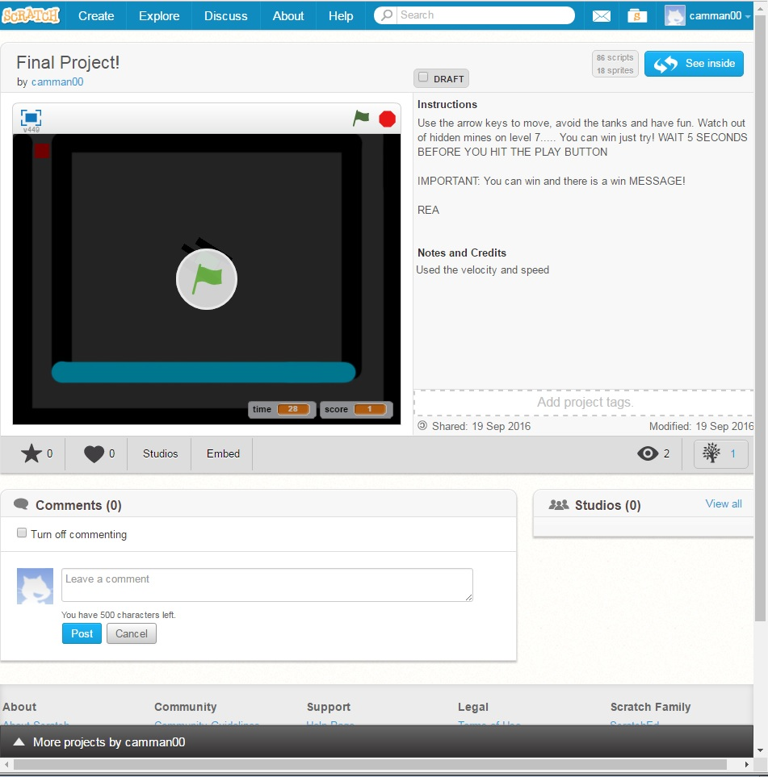

This was a basic introduction into programming. We were tasked with having a project that had three different styles across the program and it had to have sprites consisting of letters of our name.

We had a total of three projects we had to complete for are Scratch Unit!
Name Project:
For this project we had to replicate our names onto a Scratch Project using three different animations per each letter. I found this project fun because we were able to create Really cool animations which was really awesome. At the same time there was some difficulties, one was that it was hard to think of ideas for animations. In the end I thought my project had a really well turnout and it exceeded my expectations. I use mutiple if statements and methods to complete this task.
Computer Buying Project:
This was a very intresting project which I learned alot from. Not only were we supossed to replicate the program Powerpoint onto Scratch we also had to come up with a presentation.
My main role in the group was gathering data and evidence and adding in some special features on Scratch. First I interviewed my friend Tyler L who told us that he
wanted a laptop computer that did not have to have any style. He also wanted it to be able to run multiple School-like
programs like Microsoft Word ect. We ended up deciding that
Tyler would want to get a windows HP 360 computer because of its awesome compatibility,cheap price, and high function! To complete this project we used mutiple if loops and for loops
aslong as broadcasting some messages to multiple sprites and backgrounds for cool effects! I really think this project was the highlight of the Scratch unit!
Final Project:
The final project required us to either make a game or a story. I choice the game option because It looked challenging! This project was not a success for me simply because Scratches methods did not work as I wanted them to. For example, there was a 1/10 probality that the cube I used in my game would get stuck in the wall because of late callbacks. In the end I just had to invent my own method to do all of this. This method was a success, so I continued development of my game. In the end I had a nice simple maze game that met all the requirements. The reason why the project was not a success was because my intro screen interrupted my game screen causing my main sprite to malfunction. In the end I used all sorts of code to complete this project;for loops, if statements and even a scratch based ArrayList
